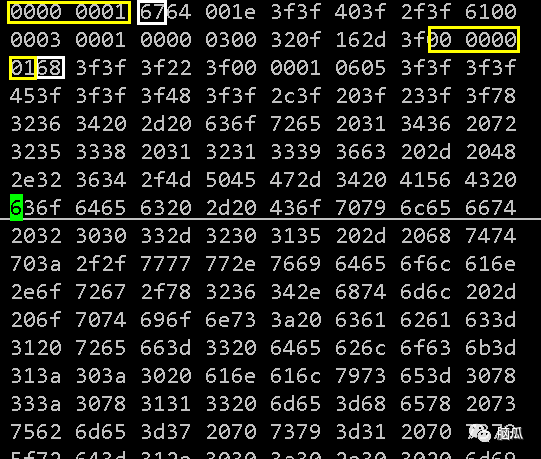

h264视频码流解析
H.264 原始码流(又称为裸流), 是一个接一个的NALU组成的, 而它的功能分为两层: 视频编码层(VCL)和网络提取层(NAL).
VCL数据即编码处理的输出, 它表示被压缩编码后的视频数据序列. 在VCL数据传输或存储之前, 这些编码的VCL数据, 先被影射或封装进NAL单元(NALU)中.
每个NALU包括一个原始字节序列符合(RBSP)、一组对应于视频编码的NALU头部信息.
NALU
+------+ +-------+------+
| NALU |--->| NAL头 | RBSP |
+------+ +-------+------+
NAL单元排列
NAL单元排列
+-------+------+-------+------+-------+------+
... ... | NAL头 | RBSP | NAL头 | RBSP | NAL头 | RBSP | ... ...
+-------+------+-------+------+-------+------+
每个NALU之间通过startCode(起始码)进行分隔, 起始码分为两种:
0x000001(3bytes) 或者 0x00000001(4bytes).
如果NALU对应的slice为一帧的开始, 就用0x00000001, 否则就用0x000001.
NALU头由一个字节组成:
+---+---+---+---+---+---+---+---+
| 0 | 1 | 2 | 3 | 4 | 5 | 6 | 7 |
+---+---+---+---+---+---+---+---+
| F | NRI | type |
+---+-------+-------------------+
F: forbidden_zero_bit. 1个bit. 禁止位, 0表示正常, 1表示错误, 一般都为0.
NRI: nal_ref_idc. 2个bit. 二进制取值 00~11, 表示这个NALU的重要性, 值越大越重要.
type: nal_unit_type. 5个bit,
其各个值含义如下:
+---------------+---------------------------+-------+
| nal_unit_type | NALU类型 | C |
+---------------+---------------------------+-------+
| 0 | 未使用 | |
+---------------+---------------------------+-------+
| 1 | 不分区, 非IDR的片 | 2,3,4 |
+---------------+---------------------------+-------+
| 2 | 片分区A | 2 |
+---------------+---------------------------+-------+
| 3 | 片分区B | 3 |
+---------------+---------------------------+-------+
| 4 | 片分区C | 4 |
+---------------+---------------------------+-------+
| 5 | IDR图像中的片 | 2,3 |
+---------------+---------------------------+-------+
| 6 | 补充增强信息单元(SEI) | 5 |
+---------------+---------------------------+-------+
| 7 | 序列参数集 | 0 |
+---------------+---------------------------+-------+
| 8 | 图像参数集 | 1 |
+---------------+---------------------------+-------+
| 9 | 分解符 | 6 |
+---------------+---------------------------+-------+
| 10 | 序列结束 | 7 |
+---------------+---------------------------+-------+
| 11 | 码流结束 | 8 |
+---------------+---------------------------+-------+
| 12 | 填充 | 9 |
+---------------+---------------------------+-------+
| 13-23 | 保留 | |
+---------------+---------------------------+-------+
| 24-31 | 不保留 | |
+---------------+---------------------------+-------+
H.264解析思路: 从码流中搜索起始码, 分离NALU; 然后再分析各个NALU头的字段.
//***************************************************************
// @file: h264_parser.c
// @author: dingfang
// @date 2019-03-03 11:29:22
//***************************************************************
#include <stdio.h>
#include <stdlib.h>
#include <string.h>
typedef enum
{
/* 0 未使用 */
NALU_TYPE_SLICE= 1,/* 不分区, 非IDR的片 */
NALU_TYPE_DPA= 2,/* 片分区A */
NALU_TYPE_DPB= 3,/* 片分区B */
NALU_TYPE_DPC= 4,/* 片分区C */
NALU_TYPE_IDR= 5,/* IDR图像中的片 */
NALU_TYPE_SEI= 6,/* 补充增强信息单元(SEI) */
NALU_TYPE_SPS= 7,/* 序列参数集 */
NALU_TYPE_PPS= 8,/* 图像参数集 */
NALU_TYPE_AUD= 9,/* 分解符 */
NALU_TYPE_EOSEQ= 10,/* 序列结束 */
NALU_TYPE_EOSTREAM= 11,/* 码流结束 */
NALU_TYPE_FILL= 12,/* 填充 */
/* 13-23 保留 */
/* 24-31 不保留 */
}NaluType_E;
typedef enum
{
NALU_PRIORITY_DISPOSABLE= 0,
NALU_PRIORITY_LOW= 1,
NALU_PRIORITY_HIGH= 2,
NALU_PRIORITY_HIGHEST= 3,
}NaluPriority_E;
typedef struct _T_NALU
{
intstartcodeprefixLen;
unsigned int len;
unsigned int maxSize;
charforbiddenBit;
charnalReferenceIdc;
charnalUnitType;
char*buf;
}NALU_T;
static int findStartCode3b(unsigned char *buf)
{
return (buf[2] != 1 || buf[0] !=0 || buf[1] != 0) ? 0 : 1;//0x000001
}
static int findStartCode4b(unsigned char *buf)
{
return (buf[3] != 1 || buf[2] != 0 || buf[0] !=0 || buf[1] != 0) ? 0 : 1;//0x00000001
}
int getAnnexbNalu(NALU_T *pNalu, FILE *fp)
{
unsigned char *buff = (unsigned char *)calloc(pNalu->maxSize, sizeof(char));
if (buff == NULL)
{
printf("buff calloc error !\n");
return -1;
}
int pos = 0;
if (fread(buff, 1, 3, fp) != 3)
{
printf("fread len != 3\n");
free(buff);
return -1;
}
if (findStartCode3b(buff) != 1)
{
if (fread(buff + 3, 1, 1, fp) != 1)
{
printf("fread len != 1\n");
free(buff);
return -1;
}
if (findStartCode4b(buff) != 1)
{
free(buff);
return -2;
}
else
{
pos = 4;
pNalu->startcodeprefixLen = 4;
}
}
else
{
pos = 3;
pNalu->startcodeprefixLen = 3;
}
int rewind = 0;
do
{
/*
* 直到寻找到下一个起始码
* 在寻找到下一个startcode(起始码)之前的数据都是NALU
* */
if (feof(fp))
{
pNalu->len = (pos - 1) - pNalu->startcodeprefixLen;
memcpy(pNalu->buf, &buff[pNalu->startcodeprefixLen], pNalu->len);
pNalu->forbiddenBit= pNalu->buf[0] & 0x80;
pNalu->nalReferenceIdc= pNalu->buf[0] & 0x60;
pNalu->nalUnitType= pNalu->buf[0] & 0x1f;
free(buff);
buff = NULL;
return pos - 1;
}
buff[pos++] = fgetc(fp);
} while (!(1 == findStartCode4b(&buff[pos - 4]) || 1 == findStartCode3b(&buff[pos - 3])));
rewind = (1 == findStartCode4b(&buff[pos - 4])) ? -4 : -3;
if (fseek(fp, rewind, SEEK_CUR) != 0)
{
free(buff);
printf("getAnnexbNalu: fseek error\n");
}
pNalu->len = (pos + rewind) - pNalu->startcodeprefixLen;
memcpy(pNalu->buf, &buff[pNalu->startcodeprefixLen], pNalu->len);
/*
* forbiddenBit, nalReferenceIdc, nalUnitType共占1字节大小
* 0x80 1000 0000
* 0x60 0110 0000
* 0x1f 0001 1111
* */
pNalu->forbiddenBit= pNalu->buf[0] & 0x80; //1bit
pNalu->nalReferenceIdc= pNalu->buf[0] & 0x60; //2bit
pNalu->nalUnitType= pNalu->buf[0] & 0x1f; //5bit
free(buff);
return pos + rewind;
}
int h264_parser(const char *url)
{
//stdout//标准输出
//stdin//标准输入
//stderr//标准错误
FILE *myout = stdout;
FILE *fp = fopen(url, "rb+");
if (fp == NULL)
{
printf("open h264 file error\n");
return -1;
}
NALU_T *pNalu = (NALU_T *)calloc(1, sizeof(NALU_T));
if (pNalu == NULL)
{
printf("pNalu calloc error\n");
fclose(fp);
return -1;
}
int buffersize = 100000;
pNalu->maxSize = buffersize;
pNalu->buf = (char *)calloc(buffersize, sizeof(char));
if (pNalu->buf == NULL)
{
printf("pNalu->buf calloc error !\n");
free(pNalu);
fclose(fp);
return -1;
}
int dataOffset = 0;
int nalNum = 0;
printf("-----+---------+-- NALU Table --+---------+---------+\n");
printf(" NUM | POS | IDC | TYPE | LEN | DATALEN |\n");
printf("-----+---------+--------+-------+---------+---------+\n");
while (!feof(fp))
{
int dataLenth = getAnnexbNalu(pNalu, fp);
if (dataLenth < 0)
{
printf("h264 parser: dataLenth < 0\n");
return -1;
}
char typeStr[10] = { 0 };
switch (pNalu->nalUnitType)
{
case NALU_TYPE_SLICE:sprintf(typeStr, "SLICE");break;
case NALU_TYPE_DPA:sprintf(typeStr, "DPA");break;
case NALU_TYPE_DPB:sprintf(typeStr, "DPB");break;
case NALU_TYPE_DPC:sprintf(typeStr, "DPC");break;
case NALU_TYPE_IDR:sprintf(typeStr, "IDR");break;
case NALU_TYPE_SEI:sprintf(typeStr, "SEI");break;
case NALU_TYPE_SPS:sprintf(typeStr, "SPS");break;
case NALU_TYPE_PPS:sprintf(typeStr, "PPS");break;
case NALU_TYPE_AUD:sprintf(typeStr, "AUD");break;
case NALU_TYPE_EOSEQ:sprintf(typeStr, "EOSEQ");break;
case NALU_TYPE_EOSTREAM:sprintf(typeStr, "EOSTREAM");break;
case NALU_TYPE_FILL:sprintf(typeStr, "FILL");break;
}
char idcStr[10] = { 0 };
switch (pNalu->nalReferenceIdc >> 5)
{
case NALU_PRIORITY_DISPOSABLE:sprintf(idcStr, "DISPOS");break;
case NALU_PRIORITY_LOW:sprintf(idcStr, "LOW");break;
case NALU_PRIORITY_HIGH:sprintf(idcStr, "HIGH");break;
case NALU_PRIORITY_HIGHEST:sprintf(idcStr, "HIGHEST");break;
}
if (nalNum < 30)
{
fprintf(myout, "%5d| %8d| %7s| %6s| %8d| %8d|\n", nalNum, dataOffset, idcStr, typeStr, pNalu->len, dataLenth);
}
dataOffset += dataLenth;
++nalNum;
}
if (pNalu)
{
if (pNalu->buf)
{
free(pNalu->buf);
pNalu->buf = NULL;
}
free(pNalu);
pNalu = NULL;
}
fclose(myout);
fclose(fp);
return 0;
}
int main(void)
{
h264_parser("./sintel.h264");
return 0;
}
运行结果
因为数据很多, 我只选择了打印前30组的数据.
-----+---------+-- NALU Table --+---------+---------+
NUM | POS | IDC | TYPE | LEN | DATALEN |
-----+---------+--------+-------+---------+---------+
0| 0| HIGHEST| SPS| 25| 29|
1| 29| HIGHEST| PPS| 6| 10|
2| 39| DISPOS| SEI| 686| 689|
3| 728| HIGHEST| IDR| 14710| 14713|
4| 15441| HIGH| SLICE| 6575| 6579|
5| 22020| DISPOS| SLICE| 2084| 2088|
6| 24108| HIGH| SLICE| 6622| 6626|
7| 30734| DISPOS| SLICE| 2216| 2220|
8| 32954| HIGH| SLICE| 6490| 6494|
9| 39448| DISPOS| SLICE| 2124| 2128|
10| 41576| HIGH| SLICE| 6662| 6666|
11| 48242| DISPOS| SLICE| 2221| 2225|
12| 50467| HIGH| SLICE| 5894| 5898|
13| 56365| DISPOS| SLICE| 2049| 2053|
14| 58418| HIGH| SLICE| 5085| 5089|
15| 63507| HIGH| SLICE| 7189| 7193|
16| 70700| DISPOS| SLICE| 2422| 2426|
17| 73126| HIGH| SLICE| 6953| 6957|
18| 80083| DISPOS| SLICE| 2561| 2565|
19| 82648| HIGH| SLICE| 6689| 6693|
20| 89341| DISPOS| SLICE| 2197| 2201|
21| 91542| HIGH| SLICE| 6307| 6311|
22| 97853| DISPOS| SLICE| 1972| 1976|
23| 99829| HIGH| SLICE| 6841| 6845|
24| 106674| DISPOS| SLICE| 1986| 1990|
25| 108664| HIGH| SLICE| 5435| 5439|
26| 114103| HIGH| SLICE| 354| 358|
27| 114461| HIGH| SLICE| 6183| 6187|
28| 120648| DISPOS| SLICE| 2381| 2385|
29| 123033| HIGH| SLICE| 5873| 5877|
NUM为编号, POS为h264文件 NALU头+RBSP 数据的长度 pos大小为从第一个开始累加的. IDC就是NALU头的NRI, TYPE就是NALU头的type, LEN是一片数据的长度, DATALEN是LEN + 起始码长度.
以16进制查看程序解析的h264文件

这是该文件的开头部分数据.
黄色框内的是起始码, 白色框内的是NUAL头, 第一个白色框数值是0x67,即对应二进制0x0110 0111,由NUAL头结构分析可知, 禁止位为0, 重要性为11, type为7即表示序列参数集, 第一个白色框到第二个黄色框前的数据为RBSP数据.